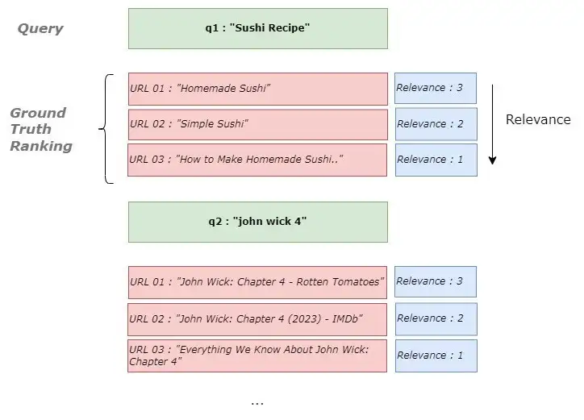

Learn-to-Rank
Misc
- Defines a ranking function to score each document based on a given query. The documents are then ranked in descending order of these scores, representing the relative relevance of the documents to the query.
- The target variable is some kind of relevance score.
- For recommendation systems, users are the queries and the products they are interested in are the documents.
- TL;DR: LambdaLoss is the most state-of-the-art method available in current py, r packages (See Listwise Ranking >> LambdaLoss), but maybe not overall
- Notes from
- Learning to Rank: A Complete Guide to Ranking using Machine Learning
- What Is Learning to Rank: A Beginners Guide to Learning to Rank Methods
- How to evaluate Learning to Rank Models
- Shows some manual calculations of the metrics to get a feel for how they work.
- Resources
- List of approaches and their papers
- Approaches used by popular search engines
- Use Cases:
- Information retrieval problems, such as document retrieval, collaborative filtering, sentiment analysis, and online advertising
- Travel Agencies Given a user profile and filters (check-in/check-out dates, number and age of travelers, ), sort available rooms by relevance.
- Vector Space Models (basic)
- Compute a vector embedding (e.g. using Tf-Idf or BERT) for each query and document, and then compute the relevance score f(x) = f(q, d) as the cosine similarity between the vectors embeddings of q and d.
- Also see: wiki
- Example: Learning to rank is good for your ML career - Part 1: background and word embeddings - Embracing the Random
- explainer, uses a python Keras model to create embeddings, compares embeddings with cosine similarity.
Preprocessing
- Feature Engineering
- Count the number of times a word in the query has occurred in the document
- e.g Sushi appears once in d1
- Count the number of times a word in the query has occurred in the document
Diagnostics
- Misc
- Also see Algorithms, Recommendation >> Metrics
- Use binary relevance metrics if the goal is to assign a binary relevance score to each document.
- Use graded relevance metrics if the goal is to set a continuous relevance score for each document.
- Mean Average Precision (MAP)
- Mean average precision within the top k highest-ranked documents
- Q is the total number of queries and r is the relevance scroe
- Issues
- It does not consider the ranking of the retrieved items, only the presence or absence of relevant documents.
- It may not be appropriate for datasets where the relevance of items is not binary, as it does not consider an items degree of relevance.
- Mean Reciprocal Rank (MRR)
- Where Q is the total number of queries and r is the relevance score
- Issue: considers only the first relevant document for the given query
- Normalized Discounted Cumulative Gain (NDCG)
- Accounts for both the relevance and the position of the results
- In the DCG equation, the numerator increases when the documents relevance is high; the denominator increases when the position of the document increases. Altogether, DCG value will go high when highly relevant items are ranked higher.
- Bound between 0 and 1, where 1 is the best
Pointwise Ranking
- The total loss is computed as the sum of loss terms defined on each document d (hence pointwise) as the distance between the predicted score s and the ground truth y, for i=1n.
- By doing this, we transform our task into a regression problem, where we train a model to predict y.
- Data is made up of queries (q) and documents (d) associated with those queries
- Issues
- True relevance (aka absolute relevance) scores are needed to train the model
- To get the ground truth relevance score per each document in the query, we can use human annotators or the number of clicks received for a particular document.
- True relevance (aka absolute relevance) scores are needed to train the model
Pairwise Ranking
- The total loss is computed as the sum of loss terms defined on each pair of documents d, d (hence pairwise) , for i, j=1n.
- The objective function on which the model is trained is to predict whether y > y or not, i.e. which of two documents is more relevant.
- By doing this, we transform our task into a binary classification problem, (1 if y > y, 0 otherwise).
- In many scenarios training data is available only with partial information, e.g. we only know which document in a list of documents was chosen by a user (and therefore is more relevant), but we dont know exactly how relevant is any of these documents
- This method only requires a partial ordering (i.e. relevance) of the documents for each query in contrast to the absolute relevance required for pointwise ranking. (see LambdaRank)
- Issues
- biased towards queries with large document pairs
- First used by RankNet, which used a Binary Cross Entropy (BCE)
Listwise Ranking
- The loss is directly computed on the whole list of documents (hence listwise) with corresponding predicted ranks. It sums over all pairs of items within a query.
- Maximizes the evaluation metric in contrast to pointwise and pairwise ranking methods
- SoftRank (2008 paper)
- Instead of predicting a deterministic score s = f(x) like lambdaRank, a smoothened probabilistic score s~ (f(x), ) is predicted.
- The ranks k are non-continuous functions of predicted scores s, but thanks to the smoothening, probability distributions can be calculated for the ranks of each document.
- Finally, SoftNDCG, the expected NDCG over this rank distribution, is optimized, which is a smooth function.
- Instead of predicting a deterministic score s = f(x) like lambdaRank, a smoothened probabilistic score s~ (f(x), ) is predicted.
- ListNet (2007 paper)
- Each ranked list corresponds to a permutation, and loss is defined over the permutation space
- Given a list of scores, s, the probability of any permutation is defined using the Plackett-Luce model.
- Loss is computed as the Binary Cross-Entropy distance between true and predicted probability distributions over the space of permutations.
- Example: Learning to rank is good for your ML career - Part 2: lets implement ListNet! - Embracing the Random
- explainer, uses a keras model to implement listnet
- LambdaLoss (2018 paper)
- Introduced a generalized framework that uses as a mixture model, where the ranked list, , is treated as a hidden variable. Then, the loss is defined as the negative log likelihood of such model.
- Results
- All other listwise methods (RankNet, LambdaRank, SoftRank, ListNet, ) are special configurations of this general framework. Indeed, their losses are obtained by accurately choosing the likelihood p(y | s, ) and the ranked list distribution p( | s).
- This framework allows us to define metric-driven loss functions directly connected to the ranking metrics that we want to optimize.
- Packages
- {{allRank}}: PyTorch-based framework for training neural Learning-to-Rank (LTR) models, featuring implementations of:
- common pointwise, pairwise and listwise loss functions
- fully connected and Transformer-like scoring functions
- commonly used evaluation metrics like Normalized Discounted Cumulative Gain (NDCG) and Mean Reciprocal Rank (MRR)
- click-models for experiments on simulated click-through data
- {{pytorchltr}}: support the infrastructure necessary for performing LTR experiments in PyTorch
- Utilities to automatically download and prepare several public LTR datasets
- Several pairloss and LambdaLoss functions associated with a few different metrics
- {{tensorflow_ranking}}: TensorFlow LTR library
- Commonly used loss functions including pointwise, pairwise, and listwise losses.
- Commonly used ranking metrics like Mean Reciprocal Rank (MRR) and Normalized Discounted Cumulative Gain (NDCG).
- Multi-item (also known as groupwise) scoring functions.
- LambdaLoss implementation for direct ranking metric optimization.
- Unbiased Learning-to-Rank from biased feedback data.
- {{allRank}}: PyTorch-based framework for training neural Learning-to-Rank (LTR) models, featuring implementations of:
LambdaRank
- LambdaRank is a gradient, despite being closely related to the gradient of the classic pairwise loss function, and Its a pointwise scoring function, meaning that the LightGBM ranker takes a single document at a time as its input, and produces a score for every document separately.
- So, a bit of a hybrid between pointwise and pairwise ranking
- Misc
- XGBoost can also perform lambdarank (docs)
- Demo
- objective
- rank:pairwise: Use LambdaMART to perform pairwise ranking where the pairwise loss is minimized
- rank:ndcg: Use LambdaMART to perform list-wise ranking where Normalized Discounted Cumulative Gain (NDCG) is maximized
- rank:map: Use LambdaMART to perform list-wise ranking where Mean Average Precision (MAP) is maximized
- eval_metric (docs)
- default: mean average precision
- auc: When used with LTR task, the AUC is computed by comparing pairs of documents to count correctly sorted pairs. This corresponds to pairwise learning to rank. The implementation has some issues with average AUC around groups and distributed workers not being well-defined.
- aucpr: Area under the PR curve. Available for classification and learning-to-rank tasks.
- For ranking task, only binary relevance label is supported. Different from map (mean average precision), aucpr calculates the interpolated area under precision recall curve using continuous interpolation.
- group input format (docs)
- For a ranking task, XGBoost requires an file that indicates the group information.
- query id columns (docs)
- For a ranking task, you may embed query group ID for each instance in the LIBSVM file by adding a token of form qid:xx in each row
- XGBoost can also perform lambdarank (docs)
- LightGBM:
- lambdarank objective:
LGBMRanker(objective="lambdarank") - Expects the target (relevance score) to be an integer
- If your score is a decimal, then you can apply a transformation to get an integer
- multiply by 10, 100, etc. to get an integer (e.g. 0.10 -> 0.14 * 100 = 14) (See Example: anime recommendation)
- Bin by quantile, then apply a ranking function (See Example: stock portfolio)
- Useful if the variable has negative values
- If your score is a decimal, then you can apply a transformation to get an integer
- Datasets should be sorted by user id or query id (might be required for group parameter, see below)
- Didnt see this in every example, so I dont know if its required or not. None of the authors gave me complete confidence that they knew what they were doing.
- lambdarank objective:
- Example: py, LightGBM, anime recommendation (article)
test_size = int(1e5)
X,y = train_processed[features],train_processed[target].apply(lambda x:int(x * 10))
test_idx_start = len(X)-test_size
xtrain,xtest,ytrain,ytest = X.iloc[0:test_idx_start],X.iloc[test_idx_start:],y.iloc[0:test_idx_start],y.iloc[test_idx_start:]
get_group_size = lambda df: df.reset_index().groupby("user_id")['user_id'].count()
train_groups = get_group_size(xtrain)
test_groups = get_group_size(xtest)
print(sum(train_groups) , sum(test_groups))
#(4764372, 100000)
model = LGBMRanker(objective="lambdarank")
model.fit(xtrain,ytrain,group=train_groups,eval_set=[(xtest,ytest)],eval_group=[test_groups],eval_metric=['ndcg'])- In this example, relevance_score is the relevance score (i.e. target), users (user_id) are the queries and the anime (anime_id) they are interested in are the documents.
- Other predictors included
- The group parameter enables the model to learn the relative importance of different features within each group, which can improve the models overall performance
- A query (e.g. user) can have many documents (e.g. products) associated with it. So in this example, a user and the products associate with him is a group.
- The total groups should be the number of samples (i.e. total number of users or queries)
- e.g.
group = [3, 2, 1]says the first user has 3 products associated with her, the seconder user has 2 products, and the third user has 1 product. - So its vital to sort the dataset by user_id(query_id) before creating the group parameter.
- Predicting relevance scores in production for the same users in the training set
- You need to have a selection of products that the user hasnt used before.
- e.g. movies: if youre recommending movies to a user, you shouldnt recommend ones theyve already seen. (i.e. movies mapped to their user id in the training data)
- In this example
- Select the users favorite N number of genres.
- For each genre in the above-selected genres, pick the highest-rated m animes. Now you have M* N animes to rank for that user.
- Just create the user base and anime-based features. And finally, call the
.predict()method with the created feature vector.
- You need to have a selection of products that the user hasnt used before.
- Example: py, LightGBM, score interpretation (article)
import lightgbm as lgb
from sklearn.model_selection import train_test_split
X_train, X_test, y_train, y_test = train_test_split(X, y, test_size=0.2, random_state=1)
X_train, X_val, y_train, y_val = train_test_split(X_train, y_train, test_size=0.2, random_state=1)
query_train = [X_train.shape[0]]
query_val = [X_val.shape[0]]
query_test = [X_test.shape[0]]
gbm = lgb.LGBMRanker()
gbm.fit(X_train, y_train, group=query_train,
eval_set=[(X_val, y_val)], eval_group=[query_val],
eval_at=[5, 10, 20], early_stopping_rounds=50)- No clue what the data is could be movies for a recommendation
- early_stopping_rounds=50 says training continues until theres no improvement for 50 rds.
- eval_at are the k values used to evaluate nDCG@k over the validation set
- Predictions
test_pred = gbm.predict(X_test)
X_test["predicted_ranking"] = test_pred
X_test.sort_values("predicted_ranking", ascending=False)This numbers can be interpreted as probabilities of a item being relevant (or being at the top).
- Most are negative, though! (See below, Example: ranking stocks for a portfolio >> Predictions on the test set)
The scores are ordered into a ranking and can be evaluated using a ranking metric (Precision@k, MAP@K, nDCG@K)
Example: py, LightGBM, ranking stocks for a portfolio (article)
- Target is Target. It might be daily returns that being used as the relevance score. Queries is Date and the documents are stocks (SecuritiesCode)
- The target variable is a real-valued float and has negative values, so it was ranked per Date, then binned into quantiles.
df["Target"] = df.groupby("Date")["Target"].rank("dense", ascending=False).astype(int)
df["Target"] = pd.qcut(df.Target, 30).cat.codescat.codeswill give what are essentially ranks after the binningTime Series Splits
# Just some arbitrary dates
time_config = {'train_split_date': '2021-12-06',
'val_split_date' : '2022-02-10',
'test_split_date' : '2022-02-20'}
train = df[(df.Date >= time_config['train_split_date']) & (df.Date < time_config['val_split_date'])]
val = df[(df.Date >= time_config['val_split_date']) & (df.Date < time_config['test_split_date'])]
test = df[(df.Date >= time_config['test_split_date'])]- Group parameter
query_train = [train.shape[0] /2000] * 2000 # Because we have 2000 stocks in each time group
query_val = [val.shape[0] / 2000] * 2000
query_test = [test.shape[0] / 2000] *2000- Model
from lightgbm import LGBMRanker
col_use = [c for c in df.columns if c not in ["RowId","Date", "Target"]] # predictors
model_return = LGBMRanker(n_estimators=15000,
random_state=42,
num_leaves=41,
learning_rate=0.002,
#max_bin =20,
#subsample_for_bin=20000,
colsample_bytree=0.7,
n_jobs=2)
model_return.fit(train[col_use], train['Target'],
group = query_train,
verbose=100,
early_stopping_rounds=200,
eval_set=[(val[col_use], val['Target'])],
eval_group=[query_val],
eval_at=[1] #Make evaluation for target=1 ranking, I choosed arbitrarily
)early_stopping_rounds=200 says training continues until theres no improvement for 200 rds.
eval_at are the k values used to evaluate nDCG@k over the validation set
Predictions on the test set
for (prices, options, financials, trades, secondary_prices, sample_prediction) in iter_test:
try:
sample_prediction['Rank'] = model_return.predict(prices[col_use]) * -1
# Get the ranks from prediction first and for the duplicated ones, just rank again
sample_prediction['Rank'] = sample_prediction.groupby("Date")["Rank"].rank("dense",
ascending=False).astype(int)
sample_prediction['Rank'] = sample_prediction.groupby("Date")["Rank"].rank("first").astype(int) - 1
except:
sample_prediction['Rank'] = 0
sample_prediction = sample_prediction.replace([-np.inf, np.inf], np.nan).fillna(0.0)
# register your predictions
env.predict(sample_prediction)
display(sample_prediction)- iter_test is some kind of list or maybe json object imported from the kaggle (this example is a kaggle notebook) that has the unseen data to be used to predict with your final model (# get iterator to fetch data day by day)
- Preds are multiplied by -1 because most are probably negative for some reason (see prev. example)
- Theyre ranked per query (Date)
- The stock ranked first for each query (Date) is pulled